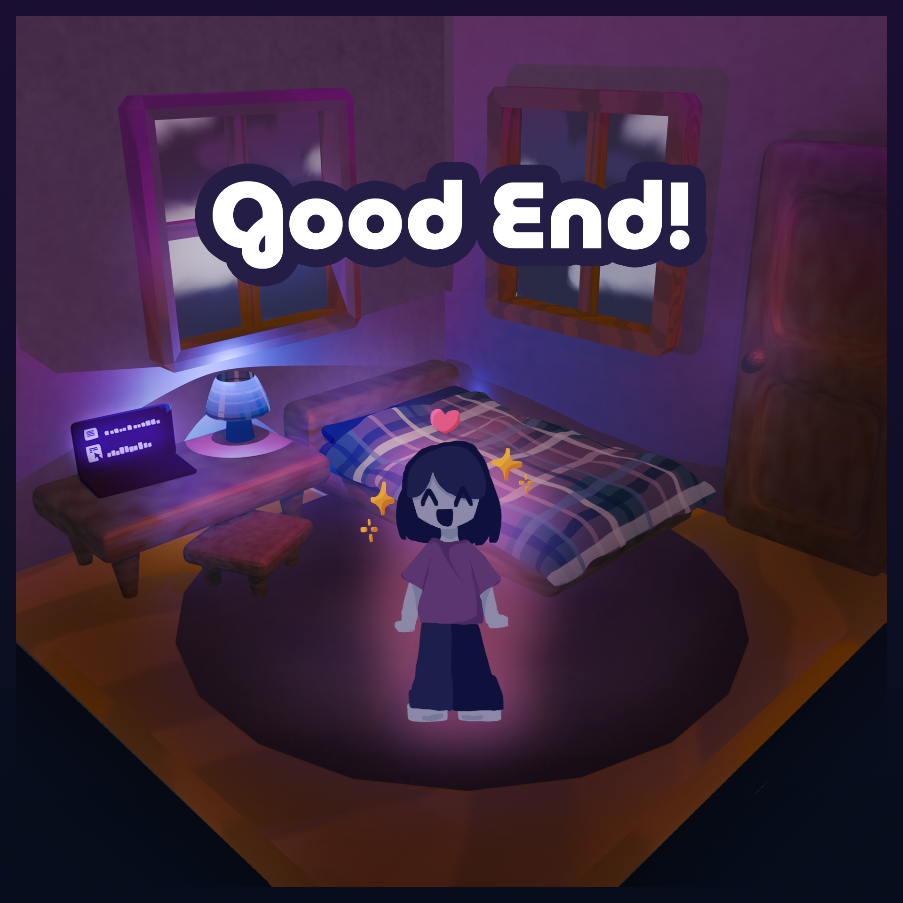

The protagonist did an amazing job on her exams, and she is feeling so proud of herself for doing well! She is relieved that she
made the right choice to fully lock in, and she is happy that she can now enjoy the rest of her day without worrying about her tests.
She is a little sad that she didn't get to spend much time with family, but now that exams are over, she can finally relax and enjoy
the newly-released game!
